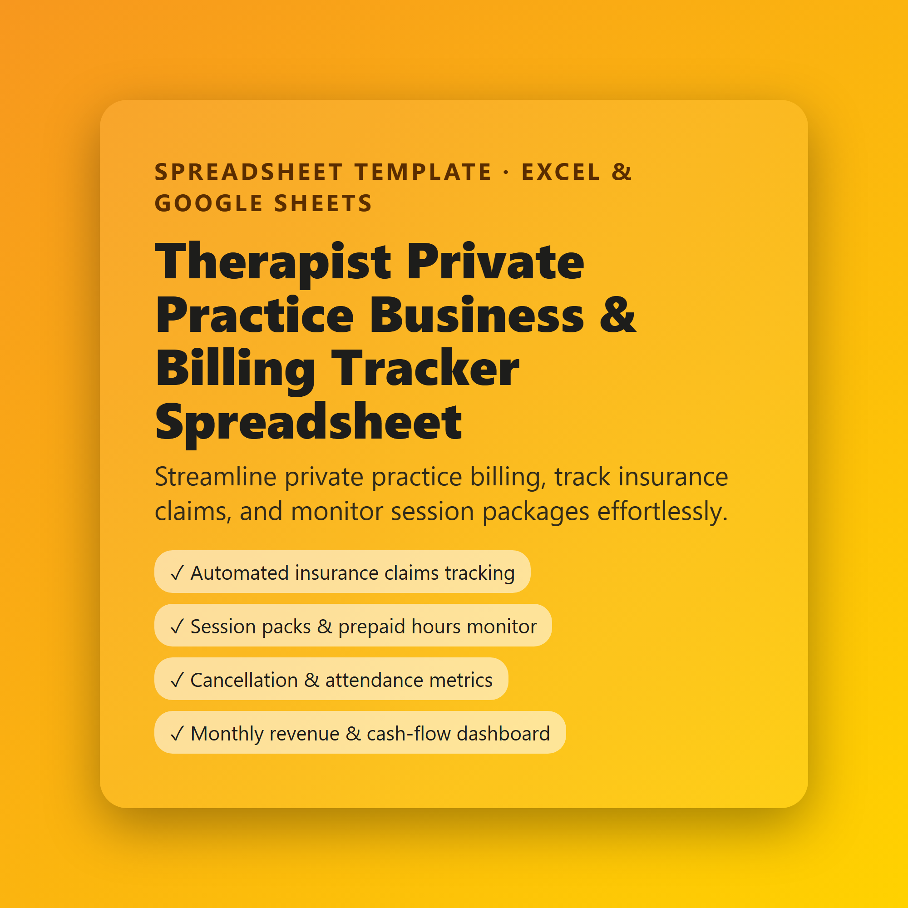

Therapist Private Practice Business & Billing Tracker Spreadsheet
Streamline private practice billing, track insurance claims, and monitor session packages effortlessly.
- Automated insurance claims tracking
- Session packs & prepaid hours monitor
- Cancellation & attendance metrics
- Monthly revenue & cash-flow dashboard
$8.99
Buy now · $8.99Includes: Therapist Private Practice Business & Billing Tracker Spreadsheet.xlsx · Therapist Private Practice Business & Billing Tracker Spreadsheet - Instructions.pdf
Streamline your private practice administration with the **Therapist Private Practice Business & Billing Tracker**. Designed specifically for mental health professionals, counsellors, and private practice therapists, this ready-to-use Excel spreadsheet saves you hours of manual tracking.
### What's Included:
- **Dashboard**: Centralized summary of your yearly billed revenue, collections, pending insurance claims, and cancellation metrics powered by automated formulas.
- **Billing Tracker**: Keep exact records of invoices, payments received, and outstanding balances.
- **Insurance Claims Tracker**: Monitor payer submissions, claim statuses (Pending, Paid, Denied), and reimbursements.
- **Session Packs Monitor**: Track prepaid client packages and automatically calculate remaining session balances.
- **Client Attendance & Cancellation Log**: Monitor cancellations and no-shows effortlessly.
### Format:
- Microsoft Excel (.xlsx)
- Fully compatible with Google Sheets
- Pre-formatted columns, currency formatting, and built-in formulas
*Note: This file is a digital organizational template. It does not replace professional accounting or legal software.*